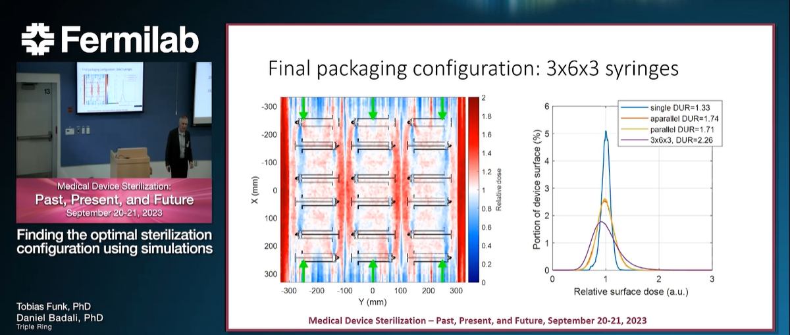

News & Events
Virtual dose mapping for radiation sterilizationThis grant is in response to PA-22-176, an omnibus call from NIH, FDA, and CDC. Therein the FDA expresses the need to develop computer modelling tools that help with regulatory decision making. Sterilization is the terminal step of medical device development, and sterilization validation is a regulatory requirement. We are developing a Monte Carlo modelling tool that can produce virtual dose maps for radiation sterilization, thereby helping medical companies make important decisions about sterilization that will also af-fect the regulatory pathway early in the medical device development cycle. As modelling only requires a CAD model of the device and not a manufactured device (which is required for dose mapping at a contract sterilizer), modelling can be used early to iterate on the design of the device and its packing. Such a modelling tool will allow medical device companies to shorten and de-risk the design process with respect to sterilization. Monte Carlo modelling libraries such as Geant4 have the ability to accurately model radiation transport and dose deposition. Because of this, Geant4 is widely used in high energy physics and radiation treatment, but so far it is rarely used for radiation sterilization. The reason for this is the lack of user friendliness, which stems from its flexible architecture and the slow simulation speeds. Furthermore, Geant4 does not provide the ability to load full CAD models, and thus makes it rather cumbersome to model entire medical devices. In Phase I of this FDA SBIR grant, we showed that Geant4 can be deployed in the cloud. We have developed a prototype of a web user interface to configure simulations and to review modeled results. Our cloud tool can load full CAD models and accurately reproduce measured dose maps. We showed a 100x increase of simula-tion speed compared to a single computer due to seamless scaling in the cloud. In Phase II we will build on our accomplishments of Phase I and extend this tool to be capable of modeling dose maps from X-ray and gamma sterilization. We will develop parametric radiation source models that can be cal-ibrated with qualification data provided by the contract sterilizer. We will refine our user interface and give the user the ability to compare the different radiation sterilization technologies. We will also implement the ability to model virtual dosimeters to facilitate direct comparison with measurements. In user studies we will show that the tool is user-friendly and can be used to streamline decisions necessary for regulatory filings. Our modelling tool will be geared towards engineers at medical device companies and does not require an ad-vanced background in software engineering or radiation physics. Rather, the engineer will be guided through simple steps through the simulation process. The engineer can review the results in a user-friendly viewer and determine the dose uniformity ratio. We anticipate that our tool will offer significant benefits to the medical de-vice development community. |
|
|  |
Fermilab presentation 2023Link to a video of our presentation 'Finding the optimal sterilization configuration using simulations' that we gave at the Medical Device Sterilization workshop |
 |
|
 |
Talk at the ASTM committee week, New Orleans 2022We had the honor to present our thoughts on Design for Sterilization to the standards committee E61 (radiation processing). The talk was well recieved and sparked a very interesting discussion with lots of new inputs. We are sharing the slides here. |
 |
Plenary talk at IMRP 20We shared our progress in developing our virtual dose mapping tool at IMRP in Bangkok in fall 2022. A pre-recorded version of the talk is here. |